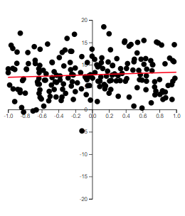
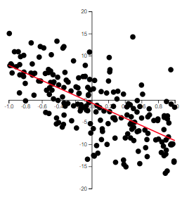
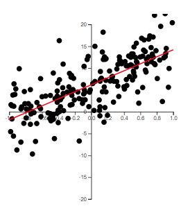
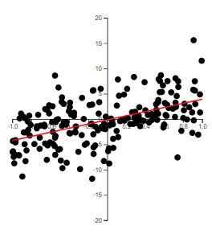

5Correlation Coefficient and the Coefficient of Determination
5.1 The Coefficient of Correlation
The claim is often made that the crime rate and the unemployment rate are “highlycorrelated.”
Another popular belief is that IQ and academic performance are “correlated.” Some people even believe that the Dow Jones Industrial Average and the lengths of fashionable skirts are “correlated.”
Thus, the term correlation implies a relationship or association between two variables.
For the data \((x_i,y_i)\), \(i=1,\ldots,n\), we want a measure of how well a linear model explains a linear relationship between \(x\) and \(y\).
Recall the quantities \(SS_{xx}\), \(SS_{yy}\), and \(SS_{xy}\).
\(SS_{xx}\) and \(SS_{yy}\) are measures of variability of \(x\) and \(y\), respectively. That is, they indicate how \(x\) and \(y\) varies about their mean, individually.
\(SS_{xy}\) is a measure of how \(x\) and \(y\) vary together.
Example 5.1 (Data from Table 2.1) For example, consider the data from Table 2.1. Let’s find \(SS_{xx}\), \(SS_{yy}\), and \(SS_{xy}\) in R.
In the output of dat1, dev_x^2 represents \((x_i-\bar{x})^2\) and dev_y^2 represents \((y_i-\bar{y})^2\) for each observation. dev_xy represents \((x_i-\bar{x})(y_i-\bar{y})\) for each observation. Note that each value is negative. This is because as \(x\) is below \(\bar{x}\), \(y\) is above \(\bar{y}\).
Likewise, as \(X\) is above \(\bar{x}\), \(Y\) is below \(\bar{y}\). In the ggplot above, the two red lines represent \(\bar{x}\) (the vertical red line) and \(\bar{y}\) (the horizontal red line). You can see how the observations are below or above these lines.
We can find the values of \(SS_{xx}\), \(SS_{yy}\), and \(SS_{xy}\) by
#SS_XXdev_x^2|>sum()
[1] 69.99219
#SS_YYdev_y^2|>sum()
[1] 2.389687
#SS_XYdev_xy |>sum()
[1] -12.36094
Example 5.2 (The trees dataset) For another example, consider the trees dataset.
In R, a packaged called datasets include a number of available datasets. One of the datasets is called trees.
There are 31 total observations in this dataset. Variables measured are the Girth (actually the diameter measured at 54 in. off the ground), the Height, and the Volume of timber from each black cherry tree.
Suppose we want to predict Volume from Girth.
Again, we plot the data with red lines representing \(\bar{x}\) and \(\bar{y}\).
In this example, most of the observations have \((x-\bar{x})(y-\bar{y})\) that are positive. This is because these observations have values of \(x\) that are below \(\bar{x}\) and values of \(y\) that are below \(\bar{y}\), or values of \(x\) that are above \(\bar{x}\) and values of \(y\) that are above \(\bar{y}\).
There are four observations that have a negative value of \((x-\bar{x})(y-\bar{y})\). Although they are negative, the value of \(SS_{xy}\) is positive due to all the observations with positive values of \((x-\bar{x})(y-\bar{y})\). Therefore, we say if \(SS_{xy}\) is positive, then \(y\) tends to increase as \(x\) increases. Likewise, if \(SS_{xy}\) is negative, then \(y\) tends to decrease as \(x\) increases.
If \(SS_{xy}\) is zero (or close to zero), then we say \(y\) does not tend to change as \(x\) increases.
5.1.1 Defining the Correlation Coefficient
We first note that \(SS_{xy}\) cannot be greater in absolute value than the quantity \[
\sqrt{SS_{xx}SS_{yy}}
\] We will not prove this here, but it is a direct application of the Cauchy-Schwarz inequality .
We define the linearcorrelation coefficient as \[
\begin{align}
r=\frac{SS_{xy}}{\sqrt{SS_{xx}SS_{yy}}}
\end{align}
\tag{5.1}\]
\(r\) is also called the Pearson correlation coefficient.
We note that \[
-1\le r \le 1
\]
If \(r=0\), then there is no linear relationship between \(x\) and \(y\).
If \(r\) is positive, then the slope of the linear relationship is positive. If \(r\) is negative, then the slope of the linear relationship is negative.
The closer \(r\) is to one in absolute value, the stronger the linear relationship is between \(x\) and \(y\).
5.1.2 Some Examples of \(r\)
The best way to grasp correlation is to see examples. In Figure 5.1, scatterplots of 200 observations are shown with a least squares line.

(a) \(r=-0.079\)

(b) \(r=-0.672\)

(c) \(r=0.723\)

(d) \(r=0.524\)
Figure 5.1: Examples of correlation
Note how the value of \(r\) relates to how spread out the points are from the line as well as to the slope of the line.
The correlation coefficient, \(r\), quantifies the strength of the linear relationship between two variables, \(x\) and \(y\), similar to the way the least squares slope, \(b_1\), does. However, unlike the slope, the correlation coefficient is scaleless. This means that the value of \(r\) always falls between \(\pm 1\), regardless of the units used for \(x\) and \(y\).
The calculation of \(r\) uses the same data that is used to fit the least squares line. Given that both \(r\) and \(b_1\) offer insight into the utility of the model, it’s not surprising that their computational formulas are related.
It’s also important to remember that a high correlation does not imply causality. If a high positive or negative value of \(r\) is observed, this does not mean that changes in \(x\)cause changes in \(y\). The only valid conclusion is that there may be a linear relationship between \(x\) and \(y\).
5.1.3 The Population Correlation Coefficient
The correlation \(r\) is for the observed data which is usually from a sample. Thus, \(r\) is the sample correlation coefficient.
We could make a hypothesis about the correlation of the population based on the sample. We will denote the population correlation with \(\rho\). The hypothesis we will want to test is \[\begin{align*}
H_0:\rho = 0\\
H_a:\rho \ne 0
\end{align*}\]
Recall the hypothesis test for the slope in Section 4.6.
If we test \[\begin{align*}
H_{0}: & \beta_{1}=0\\
H_{a}: & \beta_{1}\ne0
\end{align*}\] then this is equivalent to testing1\[\begin{align*}
H_{0}: & \rho=0\\
H_{a}: & \rho\ne0
\end{align*}\] since both hypotheses test to see of there is a linear relationship between \(x\) and \(y\).
Now note, using Equation 2.5, that \(b_1\) can be rewritten as \[
\begin{align}
b_1 & =\frac{\sum\left(x_{i}-\bar{x}\right)\left(y_{i}-\bar{y}\right)}{\sum\left(x_{i}-\bar{x}\right)^{2}}\\
& =\frac{SS_{xy}}{SS_{xx}}\\
& =\frac{rSS_{xy}}{rSS_{xx}}\\
& =\frac{rSS_{xy}}{\frac{SS_{xy}}{\sqrt{SS_{xx}SS_{yy}}}SS_{xx}}\\
& =\frac{r\sqrt{SS_{xx}SS_{yy}}}{SS_{xx}}\\
& =r\frac{\sqrt{\frac{SS_{xx}}{n-1}\frac{SS_{yy}}{n-1}}}{\frac{SS_{xx}}{n-1}}\\
& =r\frac{s_{X}s_{Y}}{s_{X}^{2}}\\
& =r\frac{s_{y}}{s_{X}}
\end{align}
\tag{5.2}\] where \(s_{y}\) and \(s_{x}\) are the sample standard deviation of \(y\) and \(x\), respectively.
The test statistic is \[
\begin{align}
t & =\frac{r\sqrt{\left(n-2\right)}}{\sqrt{1-r^{2}}}
\end{align}
\tag{5.3}\]
If \(H_0\) is true, then \(t\) will have a Student’s \(t\)-distribution with \(n-2\) degrees of freedom.
The only real difference between the least squares slope \(b_1\) and the coefficient of correlation \(r\) is the measurement scale2.
Therefore, the information they provide about the utility of the least squares model is to some extent redundant.
Furthermore, the slope \(b_1\) gives us additional information on the amount of increase (or decrease) in \(y\) for every 1-unit increase in \(x\).
For this reason, the slope is recommended for making inferences about the existence of a positive or negative linear relationship between two variables.
5.2 The Coefficient of Determination
The second measure of how well the model fits the data involves measuring the amount of variability in \(y\) that is explained by the model using \(x\).
We start by examining the variability of the variable we want to learn about. We want to learn about the response variable \(y\). One way to measure the variability of \(y\) is with \[
SS_{yy} = \sum\left(y_i-\bar{y}\right)^2
\]
Note that \(SS_{yy}\) does not include the model or \(x\). It is just a measure of how \(y\) deviates from its mean \(\bar{y}\).
We also have the variability of the points about the line. We can measure this with the sum of squares error \[
SSE = \sum \left(y_i - \hat{y}_i\right)^2
\]
Note that SSE does include \(x\). This is because the fitted line \(\hat{y}\) is a function of \(x\).
Here are a couple of key points regarding sums of squares:
If \(x\) provides little to no useful information for predicting \(y\), then \(SS_{yy}\) and \(SSE\) will be nearly equal.
If \(x\) does provide valuable information for predicting \(y\), then \(SSE\) will be smaller than \(SS_{yy}\).
In the extreme case where all points lie exactly on the least squares line, \(SSE = 0\).
Here’s an example to illustrate:
Suppose we have data for two variables, hours studied (x) and test scores (y). If studying time doesn’t help predict the test score, the variation in test scores (measured by \(SS_{yy}\)) will be similar to the error in the prediction (measured by \(SSE\)). However, if studying time is a good predictor, the prediction errors will be much smaller, making \(SSE\) significantly smaller than \(SS_{yy}\). If the relationship between study time and test scores is perfect, then the error would be zero, resulting in \(SSE = 0\).
5.2.1 Proportion of Variation Explained
We want to explain as much of the variation of \(y\) as possible. So we want to know just how much of that variation is explained by using linear regression model with \(x\). We can quantify this variation explained by taking the difference \[
\begin{align}
SSR = SS_{yy}-SSE
\end{align}
\tag{5.4}\]
SSR is called the sum of squares regression.
We calculate the proportion of the variation of \(y\) explained by the regression model using \(x\) by calculating3\[
\begin{align}
r^2 = \frac{SSR}{SS_{yy}}
\end{align}
\tag{5.5}\]
\(r^2\) is called the coefficient of determination4
Practical Interpretation:
About \(100(r^2)\%\) of the sample variation in \(y\) (measured by the total sum of squares of deviations of the sample \(y\)-values about their mean \(\bar{y}\)) can be explained by (or attributed to) using \(x\) to predict \(y\) in the straight-line model.
Example 5.3 (Example 5.2 revisited) We can find the coefficient of determination using the summary function with an lm object.
library(datasets)fit =lm(Volume~Girth, data = trees)fit |>summary()
Call:
lm(formula = Volume ~ Girth, data = trees)
Residuals:
Min 1Q Median 3Q Max
-8.065 -3.107 0.152 3.495 9.587
Coefficients:
Estimate Std. Error t value Pr(>|t|)
(Intercept) -36.9435 3.3651 -10.98 7.62e-12 ***
Girth 5.0659 0.2474 20.48 < 2e-16 ***
---
Signif. codes: 0 '***' 0.001 '**' 0.01 '*' 0.05 '.' 0.1 ' ' 1
Residual standard error: 4.252 on 29 degrees of freedom
Multiple R-squared: 0.9353, Adjusted R-squared: 0.9331
F-statistic: 419.4 on 1 and 29 DF, p-value: < 2.2e-16
We see that 93.53% of the variability in the volume of the trees can be explained by the linear model using girth to predict the volume.
If we want to find the correlation coefficient, we can just use the cor function on the dataframe. This will find the correlation coefficient for each pair of variables in the dataframe. Note that there can only be quantitative variables in the dataframe in order this function to work.